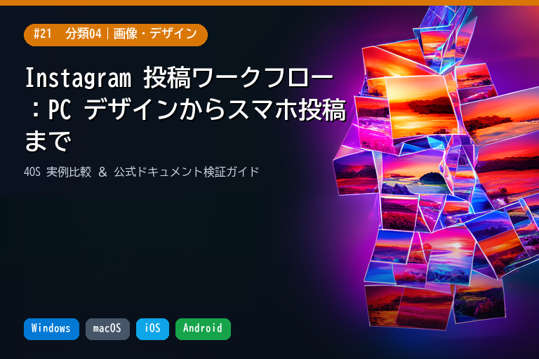

#21｜分類04: 画像・イラスト・デザイン制作 2026-11-23

Instagram 投稿ワークフロー：PC デザインからスマホ投稿まで｜Windows・macOS・iOS・Android
「PCでじっくりデザインした画像が、スマホに送った途端に画質が落ちる」「OSごとに転送方法がバラバラで効率が悪い」といった悩みをお持ちではありませんか？
Instagramの運用において、高品質なクリエイティブを維持しながらスムーズに投稿するワークフローの構築は非常に重要です。しかし、実は「PCからスマホへ画像をプッシュして即座に自動投稿する」という公式のクロスプラットフォーム同期機能は、現在の主要OSには存在しません。
この記事では、Windows、macOS、iOS、Androidの4つのOSを徹底比較しながら、それぞれの標準機能を最大限に活用した「失敗しない画像転送・投稿ワークフロー」を解説します。
4OS比較早見表
| 機能・項目 | Windows 11 | macOS | iOS (iPhone/iPad) | Android |
|---|---|---|---|---|
| 主な転送手段 | OneDrive / USB / Bluetooth | AirDrop / iCloud Drive | AirDrop / iCloud Drive | Google Drive / USB OTG |
| 標準リサイズ | PowerToys Image Resizer | Finder クイックアクション | 写真アプリ（編集） | Google フォト |
| 推奨画像形式 | JPEG / PNG | JPEG / PNG | JPEG / PNG | JPEG / PNG |
| 自動スケジューリング | ブラウザ経由(Meta公式) | ブラウザ経由(Meta公式) | ブラウザ経由(Meta公式) | ブラウザ経由(Meta公式) |
1. Windows 11 での実例手順
Windows環境では、大量の画像を効率よく処理するためのツールを組み合わせるのがコツです。
【実例手順】
1. PCでのリサイズ: デザイン完了後、Microsoft公式ツール「PowerToys Image Resizer」を使用します。Instagram推奨サイズ（正方形など）を指定し、一括で変換・保存します。
2. スマホへの転送: OneDriveを使用してクラウド経由で同期するか、外付けSSDをUSB接続して直接移動させます。
3. スマホでの投稿: Instagramアプリを開き、準備した画像を選択して投稿します。
【標準機能の制限事項】
WindowsストアアプリのみでInstagram公式クライアントを利用可能ですが、「PCからスマホへ画像をプッシュして即座に投稿する」統合ワークフローは非対応です。スケジュール管理はブラウザ版の「Instagram Business Account」のコンテンツキューを使用する必要があります。
【よくあるトラブルと解決法】
* 画像が正方形でない/比率が違う: PowerToys Image Resizerで「Aspect Ratio（アスペクト比）」を維持して再変換するか、Paintアプリで手動トリミングを行ってください。
* スマホに転送できない（OneDrive同期エラー）: PCとスマホの両方でOneDriveアプリを開き、「オフラインファイル」としてキャッシュされているか確認してください。ネットワークを切断せずに再試行します。
* アップロード時に「画像が壊れています」のエラー: WebP形式のままアップロードしている可能性があります。PC側でJPEGまたはPNGに変換し直してから転送してください。
2. macOS での実例手順
macOSでは、Finderの操作性を活かしたシームレスな連携が可能です。
【実例手順】
1. PCでのリサイズ: Finderの「クイックアクション」または標準アプリ「プレビュー (Preview)」を使用します。ファイルを選択して右クリック→「クイックアクション」からイメージ変換を行い、JPEG/PNGとして保存します。
2. スマホへの転送: AirDropでiPhone/iPadへ直接送信するか、iCloud Drive経由で共有します。
3. スマホでの投稿: Instagramアプリで受信した画像を選択して投稿します。
【標準機能の制限事項】
Finderのクイックアクションで「特定のサイズに固定して保存」する高度な処理を行うには、「ショートカット (Shortcuts)」アプリでの設定が必要です。また、Instagramへの直接連携は公式APIで非公開のため、OS標準のみでは自動スケジューリングは不可です。
【よくあるトラブルと解決法】
* プレビューでサイズ変更後、元ファイルが上書きされる: 「イメージを変換」機能を使用する際、「新しいコピーを作成」にチェックを入れるか、ショートカットアプリのスクリプトで保存先を指定してください。
* AirDropで転送できない（相手デバイスが見つからない）: Wi-FiとBluetoothの両方がオンになっているか、同じiCloudアカウントでサインインしているか確認してください。
* クイックアクションに「イメージを変換」がない: macOSのバージョンが古い可能性があります。「ショートカット (Shortcuts)」アプリから新しく作成し、Finderのコンテキストメニューに登録してください。
3. iOS（iPhone / iPad）での実例手順
iPhone/iPadでは、最終的な「見え方」の確認と微調整を重視したワークフローになります。
【実例手順】
1. PCから受信: AirDropまたはiCloud Driveで画像をダウンロードします。
2. スマホでの確認・微調整: 「写真」アプリでプレビュー表示。「編集」ボタンからトリミングや明るさ補正を行います。HEIF/HEVCファイルの場合は「共有」→「変換して保存」でJPEGに変更してください。
3. スマホでの投稿: Instagramアプリを開き、「カメラロール」から選択して投稿します。
【標準機能の制限事項】
「写真」アプリ内でのスケジューリングは非対応です。Instagram公式アプリ自体にビジネスアカウント向けスケジュール機能がありますが、iOS標準機能による自動実行ではありません。「Share Sheet（共有シート）」からの共有のみ可能です。
【よくあるトラブルと解決法】
* アップロード時に画像が暗く見える: PCでのカラープロファイル（sRGB等）が正しく読み込まれていない可能性があります。「写真」アプリで「編集」→自動調整をオフにして手動補正するか、PC側でsRGBに変換済みか確認してください。
* 共有メニューにInstagramが表示されない: iOSのバージョンアップやアプリの更新状況により変更されることがあります。「設定」からアプリの更新を確認し、「写真」→「共有」のフローを再試行してください。
* HEIFファイルで投稿エラー: 「共有」ボタンを押して表示されるメニューから「変換して保存（JPEG）」を選択し、新しいファイルとして保存してからアップロードしてください。
4. Android での実例手順
Androidでは、Googleエコシステムを活用することで安定したワークフローを構築できます。
【実例手順】
1. PCから受信: Google Drive経由、またはUSB OTGで外付けSSD/SDカードを経由して転送。「Google フォト」または「ギャラリー」アプリに同期させます。
2. スマホでの確認・微調整: 「Google フォト」を開き、画像を選択して編集（トリミング、回転）。WebP形式は自動でJPEGに変換されることが多いですが、手動チェックを推奨します。
3. スマホでの投稿: Instagramアプリから「ギャラリー/カメラロール」を選択してアップロードします。
【標準機能の制限事項】
メーカーによって「写真」アプリのUIや挙動が大きく異なるため、手順の統一は困難です。最も安定しているのは「Google フォト」です。Android OS標準にはInstagramスケジュール機能はありません。
【よくあるトラブルと解決法】
* Google フォトに同期しない: Wi-Fiのみバックアップ設定になっているか、ストレージ容量不足の可能性があります。設定から「Wi-Fiでのみ」をオフにし、データ通信がある状態で再試行してください。
* Instagramアップロード時にWebPエラー: Google フォトで自動変換されていない場合があります。「共有」メニューから手動でJPEGに変換し直して保存してください。
* 機種による編集機能の差異（トリミングできない等）: メーカー固有アプリの場合、挙動が異なることがあります。「Google フォト」または「Snapseed」などの汎用アプリを使用することを推奨します。
まとめ：快適なマルチOS環境を作るポイント
結論として、4つのOSすべてにおいて「PCでデザイン→スマホで確認→OS標準機能だけで自動投稿・スケジューリング」という完全な自動化ワークフローは存在しません。 安定した運用のためには、以下のポイントを押さえることが重要です。
- ファイル形式の統一: Instagramでの互換性を高めるため、PC側では必ず JPEGまたはPNG に変換してから転送する習慣をつけましょう。
- Webアプリの活用: スケジュール管理はOSの標準機能に頼らず、ブラウザから「Instagram Business Account」のコンテンツキューを使用するのが最も確実な方法です。
- 周辺機器とツールの導入:
- 正確な色味を再現するためには、カラーマネジメントモニターの導入がクリエイティブの質を左右します。
- 精密なデザイン制作にはペンタブレットを活用し、PCでの工程を完璧に仕上げることがスマホでのトラブルを防ぐ近道です。
- 大容量の素材移動には高速な外付けSSDを用意することで、クラウド同期の待ち時間を削減できます。
- 最終的な画像処理には、Adobe LightroomやPhotoshopなどの画像編集ソフトで適切なカラープロファイル（sRGB）を適用しておくことが、マルチOS間での「色の差異」を防ぐ鍵となります。
これらのツールと正しいワークフローを組み合わせることで、デバイスの壁を感じさせないスムーズなInstagram運用が可能になります。
参考文献・公式ドキュメント（一次情報ソース）
本記事の手順・仕様は以下の各OSおよびツールの公式ドキュメントに基づいています。OSアップデートによりメニュー名称や挙動が変わる場合があるため、最新仕様の確認にもご活用ください。
- [Windows] Image Resizer Windowsのユーティリティ - PowerToys | Microsoft Learn
- [macOS] Macの「プレビュー」で画像を切り取る/サイズ変更する/回転する - Apple サポート (日本)
- [macOS] MacのFinderでクイックアクションを実行する（イメージを変換） - Apple サポート (日本)
- [iOS] Apple製のデバイスでHEIF／HEVCメディアを扱う - Apple サポート (日本)
- [iOS] ショートカット ユーザガイド - Apple サポート (日本)
- [Android] 写真を編集する - Google フォト ヘルプ
- [共通] cwebp | WebP Official Documentation | Google for Developers